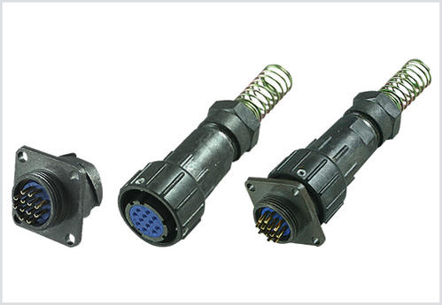

如何选择适合自己的连接器?
2019-10-24
其实，连接器的好与不好，实际上主要看这款连接器主要应用在什么地方，需要满足哪些性能，因为每一款连接器在设计研发的时候都有其侧重点，正所谓"适合自己的才是好的"。所以，想要选择一款好的连接器，可以参考以下的几个方面来考虑。

连接器的类型。连接什么，用在哪里这些问题是首先要考虑的，这就决定了所选工业连接器的类型。因为连接器的种类繁多，同一家公司就有很多种类的连接器，所以，作为用户需要了解自己的需求进而选择能够满足自己需要的连接器。
连接器的性能。选定连接器的种类以后，就要确定连接器工作在什么环境中以及需要满足哪些特性，比如连接器工作环境的温度、湿度，以及耐用性、传输速度等等。因为就算你选定了使用哪一种类型的连接器，同一种类型的连接器中也有很多能够满足不同性能的连接器，所以选型的第二步，就是要确定自己需要连接器满足哪些性能。
连接器的质量。选型第三步，也是很关键的一步，因为这时候用户已经知道自己需要什么样的连接器，最后需要确定买谁家的连接器。因为不同的厂商生产连接器的材质不同、生产工艺不同，最后生产出来的连接器的质量肯定也是会有所差异的。
上一篇：带你了解工业连接器
下一篇：连接器究竟具备哪些优势呢？...